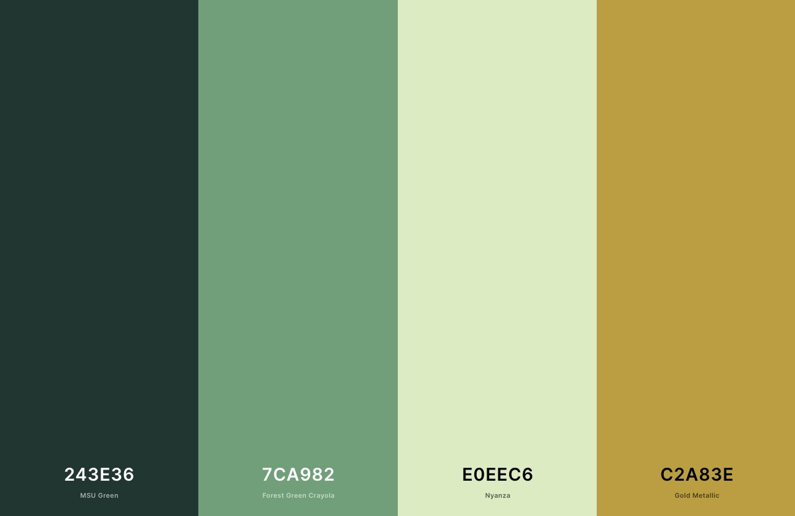

Color Scheme
I am a big fan of darker colors. I wanted an outdoor feel with the color scheme that is why I went wth green. I chose the main background of the header to be the lighter green to stand out more. I then chose a darker green for the nav to not fully distract the view from the rest of the page. I did high lights of a lighter green when you hover over a specific section of the nav along with a goldto hight light what page you are on in the website. I then had a dark green for all of the headers.